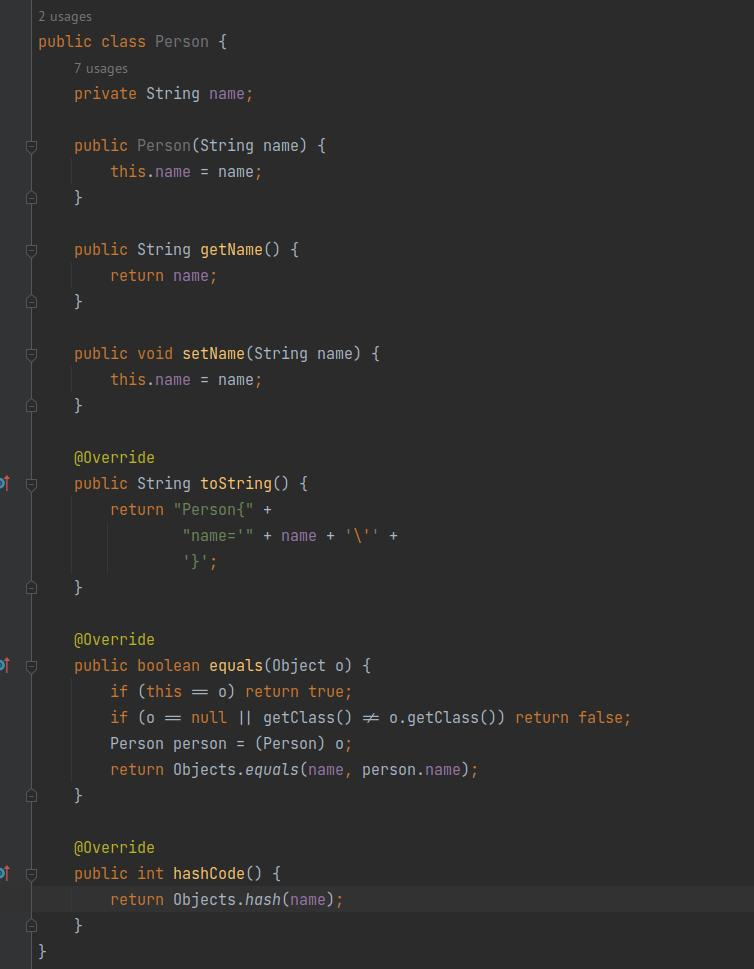
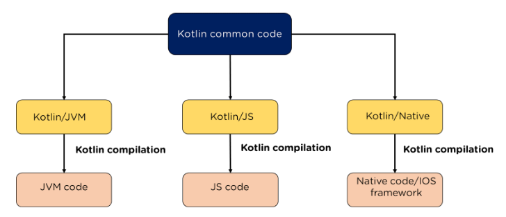

Kotlin VS Ruby
... и почему он нам не нужен
Обо мне
- Кодирую уже больше 30 лет
- Писал на калькуляторе, убийцу 1С, игрушку для Huawei, комплексную систему для РЖД, приложение для Госдумы, билетную систему для спорта и ещё много чего
- На платформах Desktop MsDos/Windows/Linux, Android, iOS, Qt, Flutter, Web
- На языках Basic, Pascal, Assembler, C/C++, C#, Java, Kotlin, JS/Typescript, Python, Ruby, Dart, Rust, Go и немного на Swift
И да, из всего этого мне нравится Kotlin
И да, из всего этого мне нравится Kotlin


Ещё немного фоток Котлина
Kotlin
Kotlin

Его придумали русские, чтобы не писать на Java
А если конкретно, то Андрей Бреслав из JetBrains в 2011 году

Чем плоха Java?
Она очень многословна
Основные преимущества
- Гибкость и простота синтаксиса
- Поддержка всех современных модных фишек, таких как асинхронность, создание DSL, функциональщина, расширения, делегаты и много что ещё
- Строгая типизация и Null-безопасность
- Мультиплатформенность
Google ❤️ Kotlin
- 5 лет назад Kotlin был выбран основным языком разработки под Android
- Активно контрибьютит в инфраструктуру и компилятор, добавляет новые языковые фичи
- Совместно с JetBrains создали организацию Kotlin Foundation и привлекают новых членов
- Активно использует Kotlin в server-side разработке
- Уже более 8,5 млн строк кода на Kotlin во внутренней кодовой базе
Ещё у него есть вот такой масКот

Погнали сравнивать с Ruby!
Smart-cast
fun hello(obj: Any) {
if (obj !is UserInfo)
throw IllegalParameterException("Object must be UserInfo")
println("Hello ${obj.name}")
}
Асинхронность
Асинхронность в Kotlin основана на coroutines (сопрограмма)
Сопрограмма это функция с возможностью приостановки в определённых точках, сохранения контекста выполнения, и переключения на выполнение части другой корутины с последующим возвратом в место прерывания.
Асинхронность в Kotlin основана на coroutines (сопрограмма)
Асинхронный код
- Поддержка честной многопоточности
- Чтобы код стал асинхронным достаточно добавить suspend
- Наличие различных готовых планировщиков, исполняющих код на главном потоке, на тредпуле, евентлупе и т.д.
- Гибкость в выборе на каком планировщике какой кусок кода будет исполняться
- Много стандартных примитивов для работы с асинхронщиной, в том числе Flow - полноценный аналог Rx
- Поддержка на всех платформах
Кроссплатформенность
Поддерживаемые целевые платформы
- JVM
- Javascript
- Web
- NodeJS
- Native LLVM
- Linux x64
- Windows x64
- MacOS x64, arm
- iOS x64, arm
Схемка из интернетов
Что хотелось бы отметить
- Возможность шарить код
- Интероперабельность с языками платформы
- Использование существующих библиотек на каждой платформе
- Нативность собранного кода на каждой из платформ
Что хотелось бы отметить
- Можно разрабатывать эффективные приложения и сервисы практически на любой платформе на одном языке
Кто уже использует мультиплатформу
- JetBrains Space
- Yandex Disk, Maps
- Netflix
- Baido
- VMWare
- Philips
- Autodesk
- Leroy Merlin
Заключение
Почему же он нам не нужен?
Потому что
А если серьезно...
то я не знаю ответа на этот вопрос
Потому как
- От этого языка можно неслабо кайфануть
- Типизация спасает от множества глупых ошибок в рантайме
- На нём можно писать любые приложения и сервисы любой сложности
- За спиной Kotlin стоят гиганты индустрии и развивают его
- Банки, кто ранее писал софт на Java переходят на Kotlin. А мы хотим с ними дружить